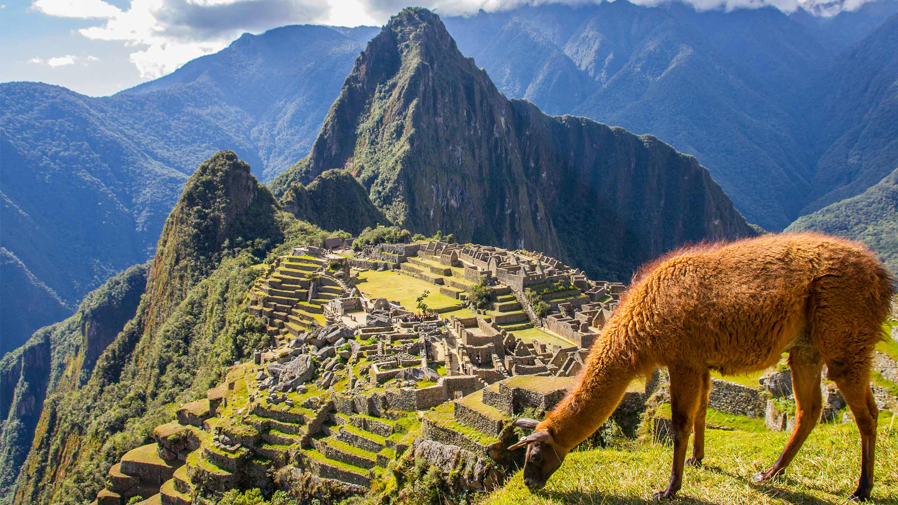
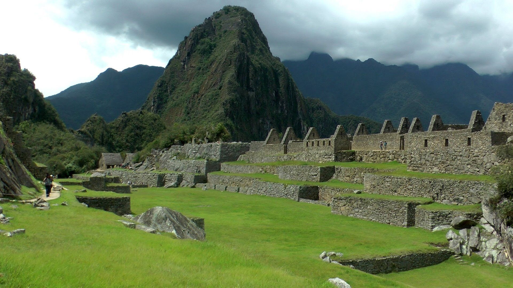
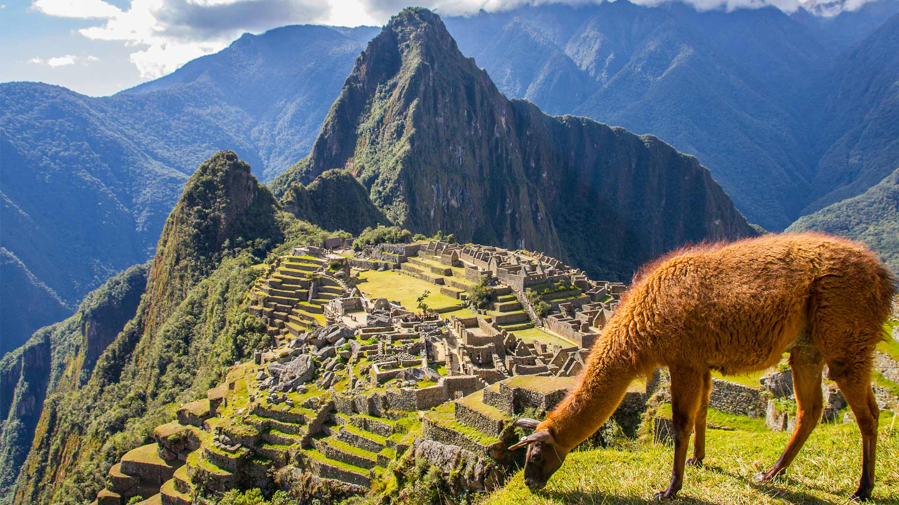
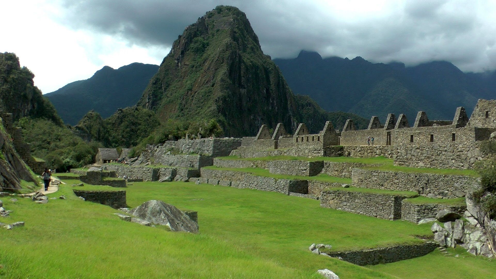

One of the most popular reasons to visit Machu Picchu is its popular hiking trail. The Inca Trail is almost as well known as the wonder of the world. This hiking route is chosen by hundreds of tourists every year, so much so that it is necessary to book months in advance. You’ll feel like you’re discovering something for the first time when you step onto the sacred grounds, especially if you just finished the 4-day Inca Trail. At a dizzying 2,430 meters above sea-level, the view form Machu Picchu on a clear day is breath taking. The famous ruins are surrounded by towering peaks and have views of the surrounding valley.